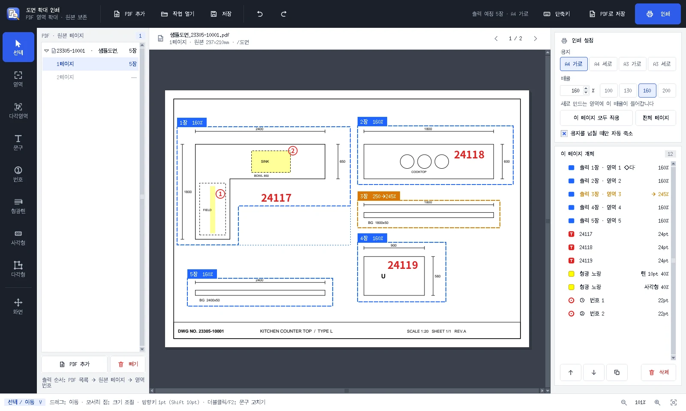
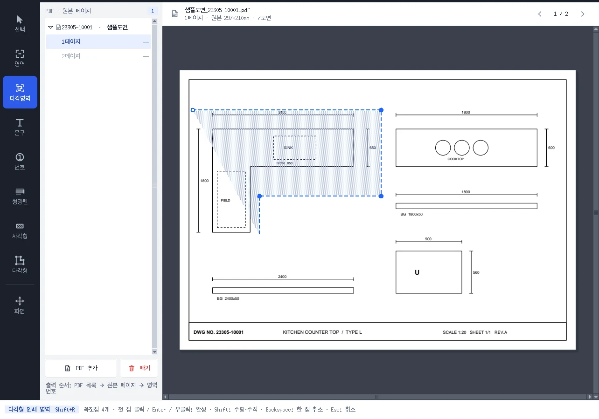
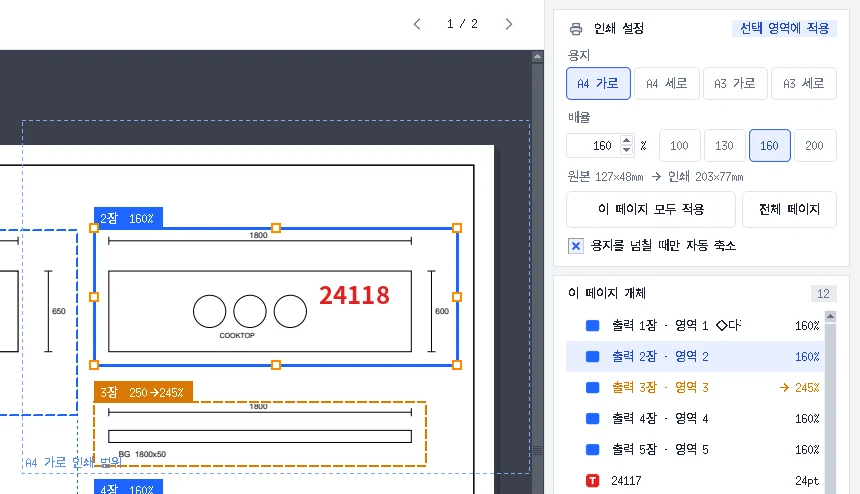
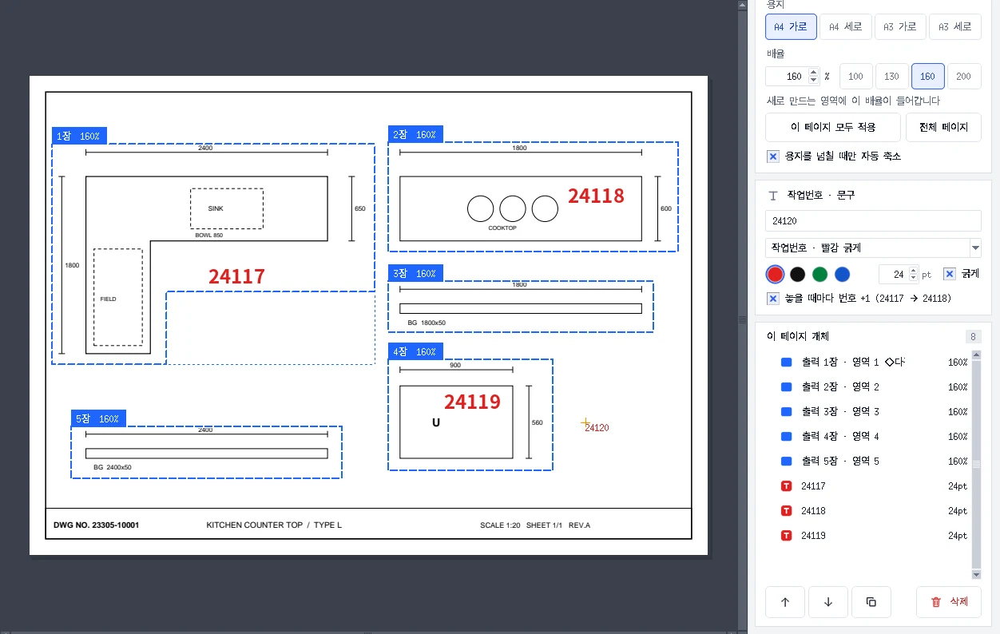
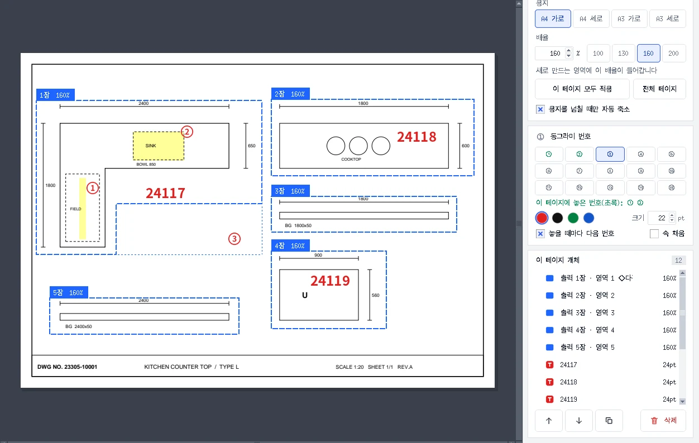
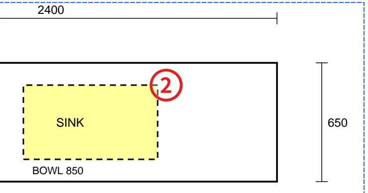
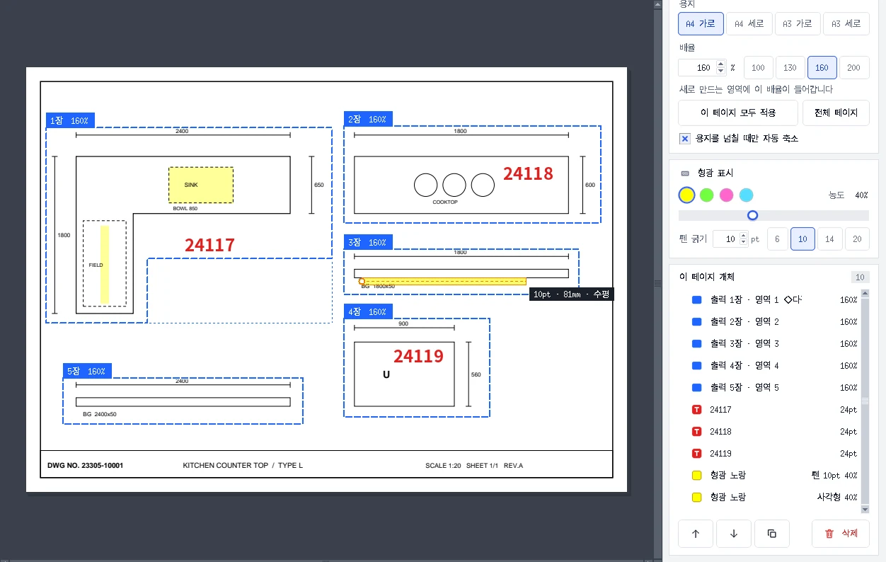
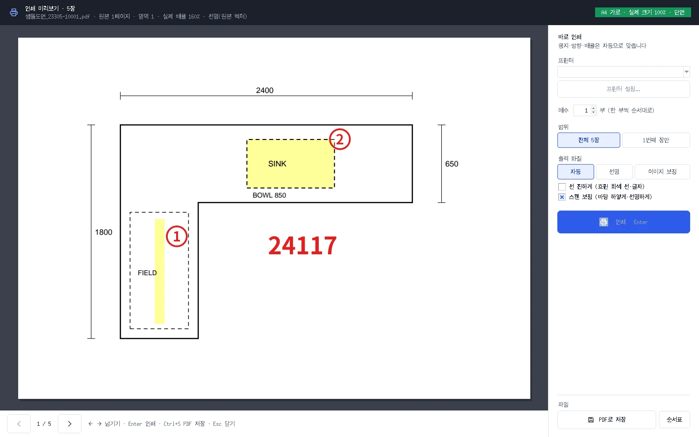
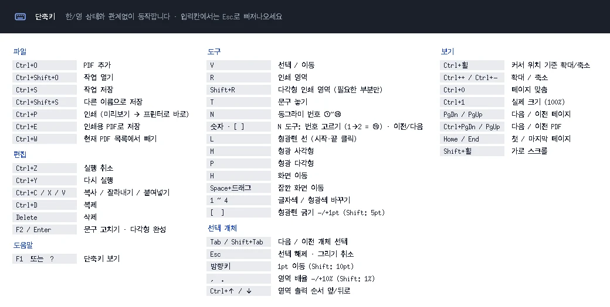

USER MANUAL · v2.7
도면 확대 인쇄
- 기준 버전v2.7
- 기준일2026-10-28
- 운영체제Windows 10/11
- 필요없음 (Python 설치 불필요, 폴더째 실행)
- 성격독립 실행형 도면 확대·출력 도구
CHAPTER 01
프로그램 개요와 실행
원본 PDF를 읽어 작업 화면에 표시하고, 사용자가 지정한 영역마다 출력 한 장을 만듭니다. 문구와 형광 표시는 편집 데이터로 보관하며 원본 PDF에 기록하지 않습니다.
주요 기능은 다음과 같습니다.
| 기능 | 내용 |
|---|---|
| PDF 불러오기 | 여러 PDF 추가, 탐색기에서 끌어다 놓기 |
| 구분 확인 | PDF 제목·파일명의 구분번호·원본 페이지 표시 |
| 영역 출력 | 사각형 또는 다각형 영역을 각각 한 장으로 출력 |
| 확대·축소 | 인쇄 배율 10~500%, A4/A3 가로·세로 |
| 문구 | 작업번호·메모, 색·크기·굵기·프리셋·번호 자동 증가 |
| 동그라미 번호 | ①~⑮, 테두리형·채움형, 사용 번호 표시 |
| 형광 표시 | 직선·사각형·다각형, 색·농도·펜 굵기 |
| 개체 편집 | 이동·일부 개체 크기 조절·꼭짓점 조절·복사·복제·삭제 |
| 출력 | 프로그램에서 프린터로 직접 인쇄, PDF와 순서표 저장 |
| 작업 보관 | .pdfregions 저장·복원, 실행 취소·다시 실행 |
1.1 배포본 실행
배포용 ZIP을 압축 해제합니다.
해제한 폴더 안의
도면확대인쇄_v2.7.exe를 실행합니다.실행 파일 옆의
_internal폴더를 그대로 둡니다.
실행 파일만 다른 곳으로 옮기면 필요한 라이브러리를 찾지 못할 수 있습니다. 다른 PC로 옮길 때에는 폴더 전체를 옮기세요. 빌드된 배포본 사용에는 별도 Python 설치가 필요하지 않습니다.
이전 배포본이나 소스 빌드 결과에서는 실행 파일 이름이 도면확대인쇄.exe처럼 다를 수 있습니다.
CHAPTER 02
빠른 작업 순서
Ctrl+O로 PDF를 추가합니다.
왼쪽에서 원본 페이지를 고르고 위쪽 제목으로 구분을 확인합니다.
R을 눌러 그림과 치수선을 감싸도록 드래그합니다. 그림 세 개를 각각 지정하면 출력도 세 장입니다.
오른쪽에서 용지와 배율을 정합니다. 기본 배율은 160%입니다.
T로 작업번호를 입력하고 원하는 위치를 클릭합니다.
L로 시작점·끝점을 클릭해 형광펜 선을 긋습니다. [·]로 굵기를 조절합니다.
필요하면 N으로 동그라미 번호를 붙입니다.
Ctrl+S로 편집 작업을 저장합니다.
Ctrl+P로 미리보기를 열고 프린터·매수·범위를 선택한 뒤 인쇄합니다.
파일로 보관하려면 메인 화면에서 Ctrl+E로 인쇄용 PDF를 저장합니다.
작업번호 입력칸에 커서가 있으면 도구 단축키는 글자로 입력됩니다. Esc 또는 Enter로 입력칸에서 빠져나온 뒤 단축키를 사용하세요.
CHAPTER 03
화면 구성

- 1맨 왼쪽 도구 막대선택(V) · 영역(R) · 다각영역(Shift+R) · 문구(T) · 번호(N) · 형광펜(L) · 사각형(M) · 다각형(P) · 화면(H). 아이콘에 마우스를 올리면 단축키가 보입니다.
- 2PDF 목록파일 제목과 구분번호(23305-10001), 원본 페이지, 각 파일·페이지의 출력 예정 장수.
- 3상단 도구 모음PDF 추가 · 작업 열기 · 작업 저장 · 실행 취소 · 다시 실행.
- 4출력 예정전체 출력 장수와 용지. 영역 하나가 출력 한 장입니다.
- 5PDF로 저장 · 인쇄Ctrl+E 인쇄용 PDF 저장, Ctrl+P 인쇄 미리보기.
- 6현재 PDF · 페이지파일 제목, 원본 페이지 크기, 폴더. 오른쪽 ‹ › 로 원본 페이지를 넘깁니다.
- 7영역 이름표(파랑)출력 순번과 배율. 이 영역은 1장, 160%로 용지 안에 들어갑니다. 1장은 L자 다각형 영역입니다.
- 8영역 이름표(주황)250%를 요청했지만 용지를 넘어 245%로 자동 축소된 영역.
- 9작업번호 문구T로 놓은 24117. 놓을 때마다 +1을 켜서 24118, 24119가 이어졌습니다.
- 10형광 표시와 동그라미 번호점선 안쪽에 형광펜 선(L)과 ①, 싱크 자리에 형광 사각형(M)과 ②.
- 11인쇄 설정용지 4종과 배율(기본 160%), 이 페이지 모두 적용 · 전체 페이지, 자동 축소.
- 12이 페이지 개체영역 · 문구 · 형광 · 번호 목록. 눌러서 선택하면 겹친 개체도 쉽게 고릅니다.
- 13순서 · 복제 · 삭제선택한 영역의 출력 순서를 앞뒤로, 복제, 삭제.
- 14상태줄현재 도구와 조작 안내. 오른쪽 끝은 화면 확대율(인쇄 배율과 별개).
| 위치 | 표시·역할 |
|---|---|
| 상단 메뉴·도구 모음 | 파일, 편집, 도구, 배율, 보기, 도움말, 작업 저장, PDF 저장, 인쇄 |
| 맨 왼쪽 도구 막대 | 선택, 인쇄 영역, 다각형 영역, 문구, 번호, 형광펜, 사각형, 다각형, 화면 이동 |
| 왼쪽 PDF 목록 | 파일 제목, 원본 페이지, 각 파일·페이지의 출력 예정 장수 |
| 가운데 위쪽 | 현재 PDF 제목과 원본 페이지 정보 |
| 가운데 작업 화면 | 원본 도면, 인쇄 영역, 추가한 문구·번호·형광 표시 |
| 오른쪽 설정 | 용지·배율, 현재 도구나 선택 개체에 필요한 설정, 개체 목록 |
| 아래쪽 상태 표시 | 현재 도구, 조작 안내, 처리 메시지, 화면 확대율 |
오른쪽 설정은 도구에 따라 바뀝니다. T는 문구, L / M / P는 형광, N은 번호 설정을 보여줍니다. 이미 놓은 개체를 선택해도 해당 개체의 설정이 표시됩니다.
아이콘 위에 마우스를 잠시 두면 기능명과 단축키를 확인할 수 있습니다. F1은 전체 단축키 창을 엽니다.
CHAPTER 04
PDF와 원본 페이지 관리
4.1 추가·열기
- PDF 추가 또는 Ctrl+O: 여러 PDF를 한꺼번에 선택할 수 있습니다.
- 탐색기에서 PDF를 프로그램 창 위로 끌어다 놓을 수 있습니다.
.pdfregions파일을 창이나 실행 파일 아이콘에 끌어다 놓으면 저장된 작업을 엽니다.- 같은 경로의 PDF가 이미 목록에 있으면 중복 추가를 건너뜁니다.
- 지원하는 입력 파일은 PDF와
.pdfregions입니다. ZIP 내부 PDF를 직접 불러오는 기능은 없으므로 먼저 압축을 푸세요.
4.2 페이지 선택과 제목
왼쪽 PDF 제목 아래의 페이지를 클릭합니다. 파일명에서 23305-10001 같은 구분번호를 확인할 수 있고, 가운데 상단에는 현재 파일 제목이 표시됩니다.
| 조작 | 결과 |
|---|---|
| PgDn / PgUp | 다음 / 이전 원본 페이지 |
| Ctrl+PgDn / Ctrl+PgUp | 다음 / 이전 PDF |
| Home / End | 현재 PDF 첫 / 마지막 페이지 |
| 가운데 제목 옆 이전·다음 버튼 | 원본 페이지 이동 |
4.3 목록에서 빼기
빼기, 파일 메뉴의 현재 PDF 목록에서 빼기, 또는 Ctrl+W를 사용합니다. PDF 목록에 포커스가 있을 때 Delete도 목록 제거로 동작합니다.
목록에서 제거하면 그 PDF의 편집 개체가 현재 작업에서 빠집니다. 원본 PDF 파일은 삭제되지 않습니다.
CHAPTER 05
사각형·다각형 인쇄 영역
5.1 사각형 인쇄 영역 — R
R을 누릅니다.
원하는 그림의 한쪽 모서리에서 반대 모서리까지 드래그합니다.
그림·치수선·필요한 번호 여백까지 포함합니다.
마우스를 놓으면 인쇄 영역이 만들어집니다.
드래그 중에는 실제 출력 크기(mm)와 적용 가능한 배율을 표시합니다. 선택 영역은 자동으로 그림을 찾는 기능이 아니므로 사용자가 직접 지정합니다.
BG를 상판과 함께 출력하려면 둘을 하나의 영역으로 감싸세요. BG만 따로 출력하려면 별도 영역으로 지정합니다. 치수선은 선택한 범위에 들어간 부분만 출력됩니다.
5.2 다각형 인쇄 영역 — Shift+R
L자·ㄷ자 상판이나 옆 그림이 가까운 도면에서 사용합니다.
Shift+R을 누릅니다.
필요한 부분을 둘러싸도록 꼭짓점을 차례로 클릭합니다.
세 점 이상 지정한 뒤 첫 점을 다시 클릭하거나 Enter 또는 오른쪽 클릭으로 완성합니다.
Shift를 누른 채 다음 점을 정하면 직전 점과 수평·수직으로 맞춥니다.
Backspace는 마지막 꼭짓점을 취소하고, Esc는 진행 중인 그리기를 취소합니다.
다각형 바깥은 흰색으로 가려져 출력됩니다. 배율과 용지 맞춤은 다각형을 감싸는 외곽 사각형을 기준으로 계산합니다. 다각형 안에 일부가 들어간 옆 그림도 함께 출력되므로 꼭짓점 위치를 확인하세요.

- 1다각영역 도구Shift+R. 사각형 영역은 R입니다.
- 2첫 점세 점 이상 찍은 뒤 첫 점을 다시 클릭하면 완성됩니다. Enter · 오른쪽 클릭도 완성.
- 3다음 점 미리보기마우스를 따라 다음 변이 보입니다. Shift를 누르면 직전 점과 수평·수직으로 맞춥니다.
- 4안쪽 범위빗금 부분만 출력되고 바깥은 흰색으로 가려집니다.
- 5상태줄 안내꼭짓점 수와 완성 · Backspace(한 점 취소) · Esc(취소) 안내.
5.3 영역 수정
- V로 선택한 후 드래그하면 영역 전체를 옮깁니다.
- 사각형은 테두리의 조절점을 끌어 크기를 바꿉니다.
- 다각형 영역은 꼭짓점 조절점을 끌어 모양을 바꿉니다. Shift로 인접 점과 수평·수직을 맞출 수 있습니다.
- 오른쪽 개체 목록에서 영역을 선택하면 겹친 영역도 구분하기 쉽습니다.
- 영역을 삭제하면 해당 출력 한 장이 제외됩니다. 원본 그림 자체는 남습니다.
5.4 영역 이름표
| 색 | 뜻 |
|---|---|
| 파랑 | 지정 배율로 용지 안에 들어옴 |
| 주황 | 용지를 넘어서 자동 축소됨 |
| 빨강 | 용지 초과 또는 유효하지 않은 영역이며 출력 전 조정 필요 |
이름표의 출력 순번은 최종 PDF의 페이지 순서입니다. 선택한 영역 주변의 연한 점선은 용지 인쇄 범위를 가늠하기 위한 보조 표시입니다. 최종 출력에는 실제 영역 안의 내용만 들어갑니다.
CHAPTER 06
용지·인쇄 배율·출력 순서
6.1 지원 용지
| 용지 | 크기 | 방향 |
|---|---|---|
| A4 가로 | 297 × 210mm | 가로 |
| A4 세로 | 210 × 297mm | 세로 |
| A3 가로 | 420 × 297mm | 가로 |
| A3 세로 | 297 × 420mm | 세로 |
모든 출력 장에 현재 선택한 용지를 사용합니다. 각 변에는 6.35mm의 기본 여백을 두고 그림을 가운데 배치합니다.
6.2 배율 지정
- 범위: 10~500%, 기본값: 160%.
- 숫자 입력 또는 100·130·160·200 버튼을 사용합니다.
- 영역을 선택한 상태에서 배율을 바꾸면 선택 영역에 바로 반영됩니다.
- 선택 영역이 없으면 새로 만드는 영역의 기본 배율을 바꿉니다.
- 이 페이지 모두 적용: 현재 페이지의 모든 영역에 기본 배율 적용.
- 전체 페이지: 확인 후 모든 PDF·모든 페이지 영역에 기본 배율 적용.
- ,는 −10%, .는 +10%; Shift+,는 −1%, Shift+.는 +1%입니다.
화면 아래쪽의 확대율과 인쇄 배율은 별개입니다. 화면을 200%로 보더라도 인쇄 배율은 오른쪽 설정값을 사용합니다.

- 1조절점테두리 · 모서리의 네모를 끌어 크기를 바꿉니다. 안쪽을 끌면 이동.
- 2용지 인쇄 범위연한 점선은 이 배율로 A4 가로에 찍히는 범위를 가늠하는 보조 표시입니다.
- 3선택 영역에 적용선택이 있을 때는 배율이 이 영역에만 바뀝니다.
- 4원본 → 인쇄 크기원본 127×48mm가 160%에서 203×77mm로 출력됩니다.
- 5한꺼번에 적용이 페이지 모두 적용 · 전체 페이지(확인 후 모든 PDF).
- 6개체 목록의 선택 행선택한 영역이 강조됩니다.
6.3 용지를 넘칠 때만 자동 축소
| 상태 | 동작 |
|---|---|
| 켜짐 | 요청 배율이 용지를 넘는 경우에만 실제 배율을 낮춤 |
| 꺼짐 | 영역이 용지를 넘으면 출력 전에 안내하고 준비를 중단 |
예를 들어 원본 영역 가로가 180mm이면 160%에서 288mm가 됩니다. A4 가로의 여백을 뺀 가용 너비는 284.3mm이므로 자동 축소가 켜져 있으면 약 157.9% 이하로 조정됩니다. 세로가 먼저 한계에 닿으면 더 낮아질 수 있습니다.
6.4 출력 순서
PDF 목록 순서 → 각 PDF의 원본 페이지 순서 → 그 페이지의 영역 순서로 출력합니다. 인쇄 영역이 없는 페이지는 출력하지 않습니다.
선택 영역의 순서는 오른쪽 위·아래 버튼, Ctrl+↑·Ctrl+↓, 또는 우클릭 메뉴로 바꿉니다. 이 기능은 현재 원본 페이지 안의 영역 순서를 조정합니다. PDF 파일 간 순서를 바꾸는 전용 정렬 기능은 없습니다. 필요한 순서대로 PDF를 추가하세요.
이 체험은 스크립트가 켜진 브라우저에서 동작합니다.
CHAPTER 07
작업번호와 일반 문구 — T
T를 눌러 문구 도구를 선택합니다.
오른쪽에 작업번호 또는 메모를 입력합니다.
프리셋·색·크기·굵기를 정합니다.
도면 위에서 놓을 위치를 클릭합니다. 클릭 전에는 커서를 따라 미리보기가 나타납니다.
24117처럼 숫자만 입력해도 되고, No. 24117처럼 직접 문구를 넣어도 됩니다. 프로그램이 No.를 강제로 붙이지 않습니다.

- 1입력칸작업번호나 메모. 다음에 놓일 24120이 들어 있습니다. 입력 후 Esc 또는 Enter로 빠져나와야 단축키가 동작합니다.
- 2프리셋작업번호 빨강·검정·초록 굵게(24pt), 작은 메모(14pt), 주의 빨강(18pt).
- 3글자색빨강 · 검정 · 초록 · 파랑. 문구 도구에서 숫자키 1~4로도 바뀝니다.
- 4크기 · 굵게6~100pt.
- 5놓을 때마다 번호 +1켜면 놓은 뒤 마지막 숫자 묶음이 1 커집니다(24117 → 24118).
- 6놓기 전 미리보기커서를 따라 다니는 미리보기. 클릭하면 이 자리에 놓입니다.
7.1 프리셋
| 프리셋 | 크기 | 색 | 굵게 |
|---|---|---|---|
| 작업번호 · 빨강 굵게 | 24pt | 빨강 | 사용 |
| 작업번호 · 검정 굵게 | 24pt | 검정 | 사용 |
| 작업번호 · 초록 굵게 | 24pt | 초록 | 사용 |
| 작은 메모 | 14pt | 검정 | 미사용 |
| 주의 · 빨강 | 18pt | 빨강 | 사용 |
글자 크기는 6~100pt입니다. 색은 빨강·검정·초록·파랑 중 고를 수 있고, 문구 도구에서 숫자키 1~4로도 바꿉니다.
7.2 놓을 때마다 번호 +1
체크하면 문구를 놓은 뒤 다음 문구의 마지막 숫자 묶음을 1 증가시킵니다.
| 현재 문구 | 다음 문구 |
|---|---|
24117 |
24118 |
No. 009 |
No. 010 |
A12-B03 |
A12-B04 |
| 숫자가 없는 문구 | 동일 문구 |
이 체험은 스크립트가 켜진 브라우저에서 동작합니다.
7.3 이미 놓은 문구 수정
V로 문구를 선택하면 오른쪽 설정값을 바꿔 내용·서식을 바로 수정할 수 있습니다. 문구를 더블클릭하거나 F2 또는 Enter를 눌러 도면 위에서 직접 고칠 수도 있습니다. 인라인 편집은 Enter로 확정하고 Esc로 취소합니다.
문구는 원본 PDF의 글자를 수정하는 기능이 아니라, 그 위에 별도로 올리는 개체입니다.
CHAPTER 08
동그라미 번호 — N
형광 표시 옆에 ①·② 등을 붙이는 전용 도구입니다. 일반 작업번호 문구와 독립적으로 동작합니다.
8.1 번호 놓기
N을 누릅니다.
오른쪽 ①~⑮ 버튼에서 번호를 고릅니다.
도면의 원하는 위치를 클릭합니다. 클릭한 점은 동그라미 중심입니다.
숫자키로도 번호를 고를 수 있습니다. 1 다음에 약 0.9초 안에 0~5를 누르면 ⑩~⑮가 선택됩니다. 예: 1→2는 ⑫. 단독 0으로 0번 번호를 만들지는 않습니다.
놓을 때마다 다음 번호를 켜면 다음 번호로 자동 이동합니다. ⑮ 이후에는 ⑮를 유지합니다. 현재 페이지에 이미 있는 번호는 버튼이 초록으로 표시되며, 중복 번호도 배치할 수 있지만 안내가 나타납니다.

- 1①~⑮ 버튼놓을 번호를 고릅니다. 이 페이지에 이미 놓은 번호는 초록으로 표시됩니다.
- 2놓은 번호 안내이 페이지에 놓은 번호 목록(①②).
- 3색 · 크기빨강·검정·초록·파랑, 원 지름 8~80pt(기본 22pt).
- 4다음 번호 · 속 채움놓을 때마다 다음 번호로 넘어가기. 속 채움을 끄면 테두리형입니다.
- 5놓기 전 미리보기③이 커서를 따라 다닙니다.
- 6테두리형 번호v2.7부터 흰 내부 바탕이 약 30%만 덮어 아래 도면이 비칩니다.
이 체험은 스크립트가 켜진 브라우저에서 동작합니다.
8.2 번호 서식
| 설정 | 내용 |
|---|---|
| 번호 범위 | 1~15 |
| 크기 | 원 지름 8~80pt, 기본 22pt |
| 색 | 빨강·검정·초록·파랑 |
| 속 채움 켜짐 | 색이 채워진 원 + 흰 숫자 |
| 속 채움 꺼짐 | 색 테두리 + 같은 색 숫자 + 흰 내부 바탕 |
v2.7 변경: 테두리형의 흰 내부 바탕은 불투명도 약 30%입니다. 아래 도면이 약 70% 비쳐 보입니다. 테두리와 숫자는 불투명하게 유지하며, 채움형은 기존과 같습니다. 이 값은 테두리형 전체에 적용하는 고정값이고 별도 슬라이더는 없습니다. 기존 저장 작업의 테두리형 번호도 v2.7에서 표시·출력하면 이 모양을 사용합니다.

- 1테두리형 ②테두리와 숫자는 불투명, 안쪽 흰 바탕은 약 30%.
- 2형광 사각형M으로 칠한 노랑 40%. 검정 선과 글자는 그대로 보입니다.
8.3 선택한 번호 수정
V로 번호를 선택하면 오른쪽에서 번호·색·크기·속 채움을 바꿀 수 있습니다. 번호가 선택된 상태에서도 숫자키와 [·]로 번호를 바꿉니다. 방향키는 이동에 사용합니다.
[·]의 동작은 문맥에 따라 다릅니다. N 도구 또는 번호 선택 상태에서는 이전·다음 번호, 그 외에는 형광펜 굵기를 바꿉니다. N 문맥에서 Shift를 함께 누르면 번호가 5씩 이동할 수 있습니다.
CHAPTER 09
형광 표시
점선 내부나 특정 가공 부분을 표시할 때 사용합니다. 점선을 자동 인식하는 기능은 없으며 사용자가 직접 선 또는 면을 지정합니다.
9.1 공통 색·농도
| 숫자키 | 형광색 |
|---|---|
| 1 | 노랑 |
| 2 | 연두 |
| 3 | 분홍 |
| 4 | 하늘 |
농도는 15~80%이며 기본 40%입니다. Multiply 방식으로 겹쳐 검정 선과 글자가 유지됩니다. 형광 표시가 겹친 곳은 더 진해질 수 있습니다.
형광 개체를 선택한 상태에서 오른쪽 색·농도를 바꾸면 그 개체에 즉시 반영됩니다. 선택을 해제하고 바꾸면 다음에 만들 표시의 설정을 바꿉니다.
9.2 직선 형광펜 — L
L을 누릅니다.
시작점을 클릭합니다.
끝점을 클릭하면 선을 완성합니다. 시작점에서 끝점까지 드래그해도 됩니다.
- 수평·수직에서 3° 이내이면 자동으로 반듯하게 맞춥니다.
- Shift를 누르면 수평·수직·45° 방향으로 맞춥니다.
- 그리는 동안 굵기와 길이(mm)가 표시됩니다.
- Esc·Backspace·오른쪽 클릭은 진행 중인 선을 취소합니다.
- 완성한 선은 자동 선택하지 않아 다음 선을 바로 그릴 수 있습니다.
펜 굵기
| 조작 | 결과 |
|---|---|
| [ | 1pt 가늘게 |
| ] | 1pt 굵게 |
| Shift+[ | 5pt 가늘게 |
| Shift+] | 5pt 굵게 |
| 오른쪽 펜 굵기 입력 | 1~80pt 지정 |
| 빠른 선택 | 6·10·14·20pt |
기본은 10pt입니다. 원본 좌표에서의 굵기이므로 10pt 선을 160%로 출력하면 종이 위에서는 약 16pt, 즉 5.64mm가 됩니다.
완성한 선을 V로 선택하면 양 끝점으로 길이·방향을 바꿀 수 있습니다. [·]와 오른쪽 굵기는 선택한 선에 적용됩니다.

- 1형광색노랑 · 연두 · 분홍 · 하늘(숫자키 1~4).
- 2농도15~80%, 기본 40%.
- 3펜 굵기1~80pt, 빠른 선택 6·10·14·20. 로 1pt, Shift+ 로 5pt씩.
- 4시작점첫 클릭 위치.
- 5굵기 · 길이 · 방향10pt · 81mm · 수평. 수평·수직 3° 이내는 자동으로 반듯해집니다.
- 6완성한 선끝점을 클릭하면 완성되고, 자동 선택하지 않아 바로 다음 선을 그릴 수 있습니다.
9.3 형광 사각형 — M
M을 누르고 채울 범위를 드래그합니다. 점선 안쪽의 넓은 사각형 면을 표시할 때 적합합니다. V로 선택해 위치와 크기를 바꿀 수 있습니다.
9.4 형광 다각형 — P
P를 누릅니다.
채울 면의 꼭짓점을 차례로 클릭합니다.
첫 점 클릭·Enter·오른쪽 클릭 중 하나로 완성합니다.
Shift는 직전 점과 수평·수직 고정, Backspace는 마지막 점 취소, Esc는 그리기 전체 취소입니다.
형광 다각형과 다각형 인쇄 영역은 다릅니다. P는 색칠할 개체만 만들고, Shift+R은 출력 범위를 만듭니다. 형광 표시만 만들고 인쇄 영역을 만들지 않으면 해당 페이지는 출력되지 않습니다.
CHAPTER 10
개체 편집
10.1 선택·이동·크기
- V로 개체를 클릭하고 드래그합니다.
- 오른쪽 이 페이지 개체 목록에서도 선택할 수 있습니다.
- Tab·Shift+Tab으로 다음·이전 개체를 순환 선택합니다.
- 방향키는 1pt,
Shift+방향키는 10pt 이동합니다. - 영역·형광 면은 조절점으로 크기, 다각형 인쇄 영역은 꼭짓점, 형광 선은 양 끝점을 편집합니다.
- 문구와 번호 크기는 오른쪽 설정을 사용합니다.
- 자동으로 원본 도형과 연결하거나 실제 제작 치수를 수정하지 않습니다.
10.2 복사·잘라내기·붙여넣기·복제
| 기능 | 단축키 | 사용법 |
|---|---|---|
| 복사 | Ctrl+C | 선택 개체를 프로그램 내부 클립보드에 복사 |
| 잘라내기 | Ctrl+X | 복사한 뒤 현재 페이지에서 제거 |
| 붙여넣기 | Ctrl+V | 현재 페이지에 추가, 다른 PDF·페이지에도 가능 |
| 복제 | Ctrl+D | 같은 페이지에 복사본 추가 |
다른 페이지에 붙여넣으면 같은 좌표를 사용합니다. 동일 경계의 개체가 이미 있으면 겹침을 피하도록 약 12pt 이동하며, 페이지 밖으로 나가면 페이지 안에 맞춥니다. 원본 페이지 크기가 서로 다르면 붙인 위치를 확인하세요. 현재 방식은 한 번에 개체 하나를 다루며 그룹 다중선택은 제공하지 않습니다.
10.3 삭제·복구
선택 후 Delete 또는 오른쪽 삭제를 누릅니다. Ctrl+Z로 실행 취소, Ctrl+Y 또는 Ctrl+Shift+Z로 다시 실행합니다. 실행 취소는 최대 60단계를 보관하며, 같은 개체의 연속 서식 편집·이동은 한 단계로 묶일 수 있습니다. 작업 파일을 다시 열면 이전 실행 취소 이력은 이어지지 않습니다.
10.4 우클릭 메뉴
상황에 따라 문구 고치기, 복제, 복사, 잘라내기, 붙여넣기, 삭제를 제공합니다. 영역에는 배율·출력 순서, 형광 선에는 굵기 조절이 추가됩니다. 개체가 없는 곳에는 페이지 맞춤이 표시됩니다. 다각형을 그리는 중에는 완성, 형광 선을 그리는 중에는 취소가 우선합니다.
CHAPTER 11
화면 보기
| 조작 | 동작 |
|---|---|
| Ctrl+휠 | 커서 위치를 기준으로 확대·축소 |
| Ctrl++ / Ctrl+− | 확대 / 축소 |
| Ctrl+0 | 페이지를 작업 화면에 맞춤 |
| Ctrl+1 | 화면 100% |
| 일반 휠 | 세로 스크롤 |
| Shift+휠 | 가로 스크롤 |
| H + 드래그 | 화면 이동 |
| Space를 누른 채 드래그 | 현재 도구를 유지하면서 잠깐 화면 이동 |
| 휠 버튼 드래그 | 화면 이동 |
화면 배율 범위는 10~400%입니다. 화면 확대는 편집 편의를 위한 것이며 종이에 출력되는 크기와 별개입니다. 왼쪽·가운데·오른쪽 패널 사이 경계를 끌어 폭을 조절할 수 있습니다.
CHAPTER 12
인쇄 미리보기와 직접 인쇄
12.1 인쇄 준비
메인 화면의 인쇄 또는 Ctrl+P를 누릅니다. 프로그램이 출력용 PDF를 임시로 만들고 미리보기를 엽니다. PDF 준비 중에는 진행 장수와 취소 버튼이 표시됩니다.
미리보기 위쪽에서 아래 정보를 확인할 수 있습니다.
- 원본 PDF 제목 / 구분
- 원본 페이지와 영역 번호
- 실제 적용 배율
- 선명(원본 벡터) 또는 이미지 보정 출력 방식
- 출력 장수와 현재 장 번호

- 1출력 정보원본 PDF 제목 · 원본 페이지 · 영역 번호 · 실제 배율 · 출력 방식(선명/이미지 보정).
- 2용지 · 크기 · 단면A4 가로 · 실제 크기 100% · 단면. 배율은 출력 PDF에 이미 들어 있습니다.
- 3프린터 · 프린터 설정설치된 Windows 프린터 선택, 드라이버 설정.
- 4매수1~99부. 2부 이상이면 한 부씩 순서대로(1,2,3 … 1,2,3 …).
- 5범위전체 또는 지금 보고 있는 한 장.
- 6출력 화질자동 · 선명 · 이미지 보정, 선 진하게, 스캔 보정. 바꾸면 미리보기를 다시 만듭니다.
- 7인쇄Enter 또는 Ctrl+P도 실제 프린터로 보냅니다.
- 8PDF로 저장 · 순서표임시 출력을 PDF로 보관(Ctrl+S), 순서표 열기.
- 9장 넘기기← → · PgUp PgDn · 휠. Esc로 닫기.
12.2 직접 인쇄 설정
| 항목 | 설정 |
|---|---|
| 프린터 | 설치된 Windows 프린터 중 선택 |
| 프린터 설정… | 급지함·인쇄 품질 등 드라이버 설정 |
| 매수 | 1~99부 |
| 범위 | 전체 또는 지금 보고 있는 한 장 |
| 용지·방향 | 메인 화면에서 정한 A4/A3 가로·세로 |
| 배율 | 출력 PDF에 이미 반영, 프린터에는 실제 크기 100%로 전송 |
| 양면 | 프로그램 직접 인쇄는 단면으로 고정 |
Enter 또는 Ctrl+P는 실제 프린터로 보내는 단축키입니다. 미리보기를 보는 중 문서 확정용으로 Enter를 누르지 마세요.
2부 이상이면 1,2,3 … 1,2,3 … 순서로 한 부씩 출력합니다. 드라이버의 매수는 1로 두고 프로그램이 페이지를 반복 전송합니다. ‘프린터 설정…’에서 용지·방향·매수·양면을 바꾸더라도 프로그램의 용지·방향·1매·단면 규칙이 우선합니다. 기본 프린터 자체를 변경하지 않습니다.
12.3 미리보기 이동·취소
- ← / →, PgUp / PgDn, 아래 이전·다음 버튼: 장 넘기기.
- Home / End: 첫 장·마지막 장.
- 마우스 휠: 이전·다음 장.
- Esc: 미리보기 닫기. 전송 중에는 먼저 인쇄 취소를 누릅니다.
- 인쇄 중 버튼은 인쇄 취소로 바뀌고 전송 진행 장수를 표시합니다.
이미 프린터 대기열이나 장치에 전달된 출력은 프로그램 취소만으로 회수되지 않을 수 있습니다. 필요하면 Windows 프린터 대기열에서도 취소하세요. 오류 후에는 대기열과 실제 출력물을 확인한 뒤 다시 전송합니다.
CHAPTER 13
출력 화질
미리보기 오른쪽 출력 화질에서 고릅니다. 변경하면 출력 PDF를 다시 만들고 같은 장 위치로 미리보기를 엽니다.
| 설정 | 동작 | 권장 상황 |
|---|---|---|
| 자동 | 페이지별로 원본 벡터 / 이미지 보정 선택 | 일반적인 기본값 |
| 선명 | 원본 페이지를 그대로 확대·배치 | PDF 원본 선·글자를 유지하고 싶을 때 |
| 이미지 보정 | 선택 영역을 최종 크기 300dpi 이미지로 출력 | 스캔 도면 또는 자동 판별이 맞지 않을 때 |
| 선 진하게 | 흰색·검정은 유지하며 회색 선·글자를 진하게 | 흐린 회색 도면 |
| 스캔 보정 | 이미지 방식 출력의 바탕·잡티·선명도 보정 | 누렇거나 회색인 스캔 바탕 |
자동은 페이지 안 이미지 면적이 페이지 면적의 절반을 넘는지를 기준으로 판단합니다. 복합 PDF에서는 기대와 다를 수 있으므로 필요하면 수동 선택합니다. ‘선명’을 골라도 원본 자체가 스캔 이미지이면 실제 벡터 선으로 복원되는 것은 아닙니다.
벡터 방식에서는 원본 페이지를 유지하고 추가 형광은 Multiply 패스로, 문구·번호는 600dpi 투명 이미지로 올립니다. 이미지 방식에서는 원본 영역을 300dpi로 만들고 같은 표시를 합성합니다. 직접 인쇄에서는 프린터 해상도를 참고해 최대 600dpi로 렌더합니다.
따라서 v2.7 출력 전체가 항상 단일 이미지인 것은 아닙니다. 원본 벡터 텍스트는 원본 상태에 따라 유지될 수 있지만 추가한 문구·번호는 검색 가능한 PDF 글자가 아닙니다.
CHAPTER 14
인쇄용 PDF와 순서표 저장
14.1 메인 화면에서 저장
PDF로 저장 또는 Ctrl+E → 파일 이름과 위치 지정 → 출력 PDF 준비 → 미리보기 순서로 진행합니다.
14.2 인쇄 미리보기에서 보관
Ctrl+P로 만든 임시 출력의 미리보기에서는 PDF로 저장 또는 Ctrl+S로 파일을 보관할 수 있습니다. 이미 파일로 저장해 연 미리보기에서는 Ctrl+S가 저장된 PDF를 여는 동작이며, 하단에 PDF 열기·폴더 버튼이 있습니다.
14.3 순서표
PDF와 같은 이름의 .순서표.html을 함께 저장합니다. 출력 페이지, PDF 제목/구분, 원본 페이지, 영역 번호, 실제 배율, 확인 체크칸이 포함됩니다. 미리보기의 순서표 버튼으로 열 수 있습니다.
외부 PDF 뷰어에서 인쇄하는 경우에는 실제 크기 100%를 사용하세요. 프로그램에서 이미 확대했으므로 PDF 뷰어에서 160%를 다시 적용하면 이중 확대됩니다.
CHAPTER 15
작업 저장·복원과 설정
15.1 서로 다른 저장의 의미
| 파일 | 용도 | 다시 편집 |
|---|---|---|
| 원본 PDF | 입력 도면 | 원본 그대로 보관 |
.pdfregions |
인쇄 영역·문구·번호·형광·출력 설정 보관 | 프로그램에서 편집 가능 |
인쇄용 .pdf |
최종 인쇄·전달 | 개체 편집 작업을 복원하는 파일은 아님 |
.순서표.html |
출력 순서 확인 | 인쇄 목록 참고용 |
Ctrl+S는 처음에는 저장 위치를 묻고 이후 같은 작업 파일에 저장합니다. Ctrl+Shift+S는 다른 이름으로 저장합니다. Ctrl+Shift+O로 작업을 엽니다.
작업 파일에는 원본 PDF 자체가 들어 있지 않습니다. 원본의 절대 경로와 SHA256을 보관하며, 열 때 원본 존재·해시·페이지 수를 확인합니다. 원본이 이동·변경되면 복원을 중단합니다. 현재는 이동한 원본을 새 경로로 찾아 연결하는 전용 기능이 없습니다. 원래 위치와 파일 내용으로 되돌리세요.
작업 파일 형식 버전은 1이고 최대 읽기 크기는 20MiB입니다. v2.7 내부 배경 수정은 작업 파일 형식을 바꾸지 않습니다. 이전 작업을 열 수 있지만, 오래된 프로그램이 새 다각형·선·번호 기능을 모두 올바르게 표시한다고 보장할 수는 없습니다.
15.2 프로그램 설정 기억
%APPDATA%\도면확대인쇄\settings.json에 다음 정보를 보관합니다.
- 기본 인쇄 배율, 용지, 자동 축소
- 문구 입력값·프리셋·색·크기·굵기, 번호 자동 증가
- 형광색·농도·펜 굵기
- 동그라미 번호 크기·색·채움·자동 넘김
- 출력 화질·선 진하게·스캔 보정
- 마지막 프린터, 파일 폴더, 출력 폴더, 창 크기·최대화 상태
프로그램 설정 저장과 편집 작업 저장은 다릅니다. 영역·문구 배치를 자동 백업하는 기능은 없으므로 작업 중에는 Ctrl+S로 저장하세요. 정상 종료 시 프로그램 설정을 기록하며, 저장하지 않은 편집 내용이 있으면 작업 저장 여부를 묻습니다.
15.3 임시 출력
바로 인쇄용 PDF는 Windows 임시 폴더 아래 도면확대인쇄_인쇄 폴더에 만듭니다. 프로그램 시작 후 정리 시점에 24시간보다 오래된 해당 폴더의 파일을 정리합니다. 장기 보관할 출력은 PDF로 저장을 사용하세요.
CHAPTER 16
전체 단축키

16.1 메인 창
| 구분 | 키 | 동작 |
|---|---|---|
| 파일 | Ctrl+O | PDF 추가 |
| 파일 | Ctrl+Shift+O | 작업 열기 |
| 파일 | Ctrl+S | 작업 저장 |
| 파일 | Ctrl+Shift+S | 다른 이름으로 저장 |
| 파일 | Ctrl+P | 인쇄 준비·미리보기 |
| 파일 | Ctrl+E | 인쇄용 PDF로 저장 |
| 파일 | Ctrl+W | 현재 PDF 목록에서 빼기 |
| 파일 | Alt+F4 | 프로그램 닫기 |
| 도구 | V | 선택 / 이동 |
| 도구 | R | 사각형 인쇄 영역 |
| 도구 | Shift+R | 다각형 인쇄 영역 |
| 도구 | T | 작업번호·문구 |
| 도구 | N | 동그라미 번호 |
| 도구 | L | 형광펜 선 |
| 도구 | M | 형광 사각형 |
| 도구 | P | 형광 다각형 |
| 도구 | H | 화면 이동 |
| 편집 | Ctrl+Z | 실행 취소 |
| 편집 | Ctrl+Y / Ctrl+Shift+Z | 다시 실행 |
| 편집 | Ctrl+C / Ctrl+X / Ctrl+V | 개체 복사 / 잘라내기 / 붙여넣기 |
| 편집 | Ctrl+D | 선택 개체 복제 |
| 편집 | Delete | 선택 개체 삭제; PDF 목록 포커스에서는 PDF 제거 |
| 편집 | F2 | 선택 문구 인라인 편집 |
| 편집 | Enter | 다각형 완성 또는 선택 문구 편집; 입력칸에서는 빠져나오기 |
| 편집 | Backspace | 다각형 마지막 점 취소; 진행 중인 선 취소; 그 외 개체 삭제 |
| 편집 | Esc | 인라인 취소 / 그리기 취소 / 선택 해제 / 입력칸 빠져나오기 |
| 선택 | Tab / Shift+Tab | 다음 / 이전 개체 선택 |
| 이동 | 방향키 / Shift+방향키 | 1pt / 10pt 이동 |
| 배율 | , / . | 선택 영역 또는 기본 배율 −10% / +10% |
| 배율 | Shift+, / Shift+. | −1% / +1% |
| 순서 | Ctrl+↑ / Ctrl+↓ | 같은 페이지 영역 출력 순서 앞 / 뒤 |
| 굵기 | / | 형광펜 굵기 −1pt / +1pt |
| 굵기 | Shift+[ / Shift+] | 형광펜 굵기 −5pt / +5pt |
| 번호 | 숫자키 | N 문맥에서 1~15 선택; 그 외 1~4는 색 선택 |
| 번호 | / | N 문맥에서 이전 / 다음 번호 |
| 보기 | Ctrl+휠 | 커서 중심 확대 / 축소 |
| 보기 | Ctrl++ / Ctrl+− | 화면 확대 / 축소 |
| 보기 | Ctrl+0 / Ctrl+1 | 페이지 맞춤 / 화면 100% |
| 보기 | 휠 / Shift+휠 | 세로 / 가로 스크롤 |
| 보기 | Space+드래그 / 휠 버튼 드래그 | 잠깐 화면 이동 |
| 탐색 | PgDn / PgUp | 다음 / 이전 원본 페이지 |
| 탐색 | Ctrl+PgDn / Ctrl+PgUp | 다음 / 이전 PDF |
| 탐색 | Home / End | 현재 PDF의 첫 / 마지막 페이지 |
| 도움말 | F1 / ? | 단축키 전체 보기 |
입력칸에서는 단일 문자·기호를 편집용으로 사용합니다. 한/영 상태·Caps Lock과 무관하게 도구 단축키를 사용할 수 있도록 처리하지만, 입력 중에는 Esc로 화면에 포커스를 돌려주세요. 목록에 포커스가 있으면 방향키·Home/End 등은 목록 이동이 우선할 수 있습니다.
16.2 인쇄 미리보기 창
| 키 | 동작 |
|---|---|
| Enter / 숫자패드 Enter / Ctrl+P | 실제 프린터로 인쇄 |
| Ctrl+S | 임시 출력 PDF 저장; 이미 저장된 출력이면 PDF 열기 |
| ← / →, PgUp / PgDn | 이전 / 다음 장 |
| Home / End | 첫 / 마지막 장 |
| 휠 | 이전 / 다음 장 |
| Esc | 미리보기 닫기; 전송 중에는 취소 처리가 먼저 필요 |
CHAPTER 17
업무별 사용 예
17.1 원본 한 페이지에 그림 세 개
첫 그림과 치수선을 R로 감쌉니다.
두 번째·세 번째 그림도 각각 영역으로 지정합니다.
영역 목록이 세 개이고 출력 예정이 세 장인지 확인합니다.
각 영역에 필요한 작업번호를 놓습니다.
160%를 선택하고 이 페이지 모두 적용합니다.
미리보기에서 세 장을 확인해 인쇄합니다.
17.2 L자 상판의 빈 공간에 다른 그림이 있는 경우
Shift+R로 L자 외곽을 따라 점을 찍어 필요한 그림만 포함합니다. 치수선이 바깥으로 돌출되는 부분도 경계 안에 넣고, 빠져야 하는 다른 그림은 경계 밖에 둡니다. 미리보기에서 흰 마스크가 필요한 치수를 가리지 않는지 확인합니다.
17.3 점선 내부에 형광펜과 번호 붙이기
L, 시작점 클릭, 끝점 클릭.
너무 굵으면 [ 또는 Shift+[로 줄이고 다음 선을 긋습니다.
N으로 전환해 ①을 선 옆에 놓습니다.
자동 다음 번호를 켜고 필요한 번호를 계속 붙입니다.
형광선과 번호가 인쇄 영역 안에 들어갔는지 확인합니다.
테두리형 번호는 흰 내부 30%를 통해 아래 도면이 비칩니다.
17.4 같은 위치의 작업번호를 여러 페이지에 넣기
첫 페이지에서 문구를 놓고 V로 선택해 Ctrl+C → 다음 페이지 → Ctrl+V를 사용합니다. 번호가 달라야 하면 붙인 문구를 선택해 내용만 수정합니다. 페이지 좌표가 같은 경우에 적합하며 페이지 크기나 도면 위치가 다르면 위치를 조정합니다.
17.5 특정 출력 한 장만 재인쇄
미리보기에서 해당 장으로 이동한 뒤 범위를 지금 페이지만으로 바꾸고 필요한 매수로 인쇄합니다. 이 ‘한 장’은 원본 PDF 한 페이지가 아니라 분리된 최종 출력 한 장입니다.
CHAPTER 18
문제 해결과 지원 범위
| 증상 | 확인·해결 |
|---|---|
| 실행 파일이 시작되지 않음 | ZIP을 완전히 풀었는지, _internal 폴더가 함께 있는지 확인 |
| PDF가 이미 있다고 나옴 | 같은 경로는 중복 추가하지 않음. 왼쪽 목록에서 해당 파일 선택 |
| PDF 제목이 좁아서 안 보임 | 왼쪽 패널 폭을 늘리고 가운데 상단 파일명 확인 |
| 출력할 영역이 없다고 나옴 | 문구·형광만 만든 상태인지 확인하고 R 또는 Shift+R로 인쇄 영역 추가 |
| 160%로 설정했는데 더 작음 | 자동 축소 여부·용지 크기·미리보기 실제 배율 확인 |
| 용지 초과 안내 | 배율 낮추기, A3 선택, 영역 여백 줄이기, 자동 축소 켜기 |
| 작업번호 또는 형광 표시가 잘림 | 개체가 인쇄 영역·다각형 경계 안에 있는지 확인 |
| 단축키가 문구로 입력됨 | 입력칸에서 Esc 또는 Enter로 빠져나오기 |
| 가 펜 굵기 대신 번호를 바꿈 | N 도구 또는 번호 선택 상태. 선택 해제 후 L로 전환 |
| ⑫ 대신 ①·②가 따로 선택됨 | 1→2를 0.9초 안에 입력하거나 오른쪽 ⑫ 버튼 사용 |
| 색·크기를 바꿨는데 기존 개체가 바뀜 | 선택 개체에 실시간 반영되는 동작. Esc로 선택을 해제하고 기본값 변경 |
| 번호 흰 바탕이 완전히 하얗지 않음 | v2.7 테두리형의 의도된 30% 흰색 불투명도. 채움형은 별도 양식 |
| 흐린 스캔 도면 | 이미지 보정·스캔 보정 또는 선 진하게 사용 |
| 원본이 스캔인데 ‘선명’도 흐림 | 원본 픽셀을 벡터로 복원하지는 못함. 이미지 보정 선택 |
| 프린터 목록이 비어 있음 | Windows에 프린터가 설치·연결되었는지 확인하거나 PDF로 저장 |
| 인쇄 실패 또는 일부 장만 나옴 | 프린터 대기열·실제 출력 확인 후 필요한 장만 재인쇄 |
| 작업 파일에서 원본을 못 찾음 | 원본 PDF를 저장 당시 경로로 복원 |
| 저장 이후 원본이 바뀌었다고 나옴 | 저장 당시 내용과 동일한 원본 복원; 파일명만 같은 다른 PDF는 사용 불가 |
| 작업 파일이 너무 큼 | 현재 읽기 제한 20MiB. 작업을 나누어 별도 보관하는 방식 고려 |
지원 범위는 수동 도면 영역 선택과 주석·확대 출력입니다. 원본 PDF 글자·도형 자체 편집, 제작 치수 자동 변경, PDF 내 점선 자동 추적, OCR, ZIP 직접 열기, 그룹 다중선택, 개체 회전, 자동 작업 백업은 현재 기능에 포함되지 않습니다.
프로그램 기능과 별도로 앞서 제작한 ITEM/BG 분류 HTML은 별도 도구입니다. 이 확대 인쇄 프로그램이 PDF에서 K/U/V/BG·현장명·재질을 자동 분류하거나 라벨 목록을 생성하지는 않습니다.
CHAPTER 19
기본값·파일·기술 정보
19.1 주요 기본값과 한계
| 항목 | 값 |
|---|---|
| 기본 용지 | A4 가로 |
| 기본 인쇄 배율 | 160% |
| 인쇄 배율 범위 | 10~500% |
| 화면 배율 범위 | 10~400% |
| 자동 축소 | 기본 켜짐 |
| 용지 여백 | 각 변 18pt = 6.35mm |
| 문구 크기 | 기본 프리셋 24pt, 허용 6~100pt |
| 형광 농도 | 기본 40%, 허용 15~80% |
| 형광펜 굵기 | 기본 10pt, 허용 1~80pt |
| 동그라미 번호 | 1~15, 기본 지름 22pt, 허용 8~80pt |
| 테두리 번호 흰 내부 | 불투명도 77/255 ≈ 30.2% |
| 번호 자동 다음 | 기본 켜짐 |
| 문구 번호 자동 +1 | 기본 꺼짐 |
| 인쇄 매수 | 1~99부, 미리보기 시작 시 1부 |
| 화질 | 기본 자동, 선 진하게 꺼짐, 스캔 보정 켜짐 |
| 작업 파일 | UTF-8 JSON 형식 .pdfregions, 형식 버전 1 |
| 작업 파일 읽기 제한 | 20MiB |
| 실행 취소 | 최대 60단계 |
| 사용 글꼴 | Windows 맑은 고딕 우선, 가능한 경우 Arial 대체 |
일부 기본값은 이전 실행에서 저장한 설정이 있으면 그 설정으로 시작합니다.
19.2 배포·소스 구성
| 파일·폴더 | 역할 |
|---|---|
도면확대인쇄_v2.7.exe |
Windows 실행 파일 |
_internal |
Python·Tk·PDFium·Pillow 등 실행 의존 파일 |
사용방법.md |
프로그램 도움말 메뉴에서 여는 사용 설명서 |
빠른시작.txt |
간단한 시작 안내 |
라이선스 |
동봉 라이브러리의 고지 문서 |
소스/app.py |
화면·이벤트·파일 관리·미리보기 |
소스/core.py |
PDF 읽기·주석 합성·작업 파일·출력 PDF·순서표 |
소스/ui.py |
테마·아이콘·툴팁·키 처리·파일 끌어다 놓기 |
소스/winprint.py |
Windows 프린터 설정·GDI 인쇄 |
소스/requirements.txt |
Python 패키지 버전 |
build.py, 빌드.bat |
소스 배포본의 Windows 빌드 진입점 |
이 문서는 기능 설명서입니다. 기존 소스 ZIP의 간단 설명 중 ‘출력이 모두 이미지라 텍스트 검색이 안 된다’는 문장은 v2.5 이후 혼합 출력 방식과 다를 수 있어 13장에서 구분해 설명했습니다.
19.3 처리 방식과 데이터 보존
- 편집 좌표는 원본 페이지 왼쪽 위 기준의 PDF 포인트입니다. 1pt는 약 0.3528mm입니다.
- 원본 PDF는 읽기용으로 사용하고 작업 저장과 출력 시 원본 덮어쓰기를 막습니다.
- PDF 생성과 프린터 전송은 각각 별도 프로세스에서 수행합니다.
- 원본 경로·SHA256·페이지 크기·인쇄 영역(
rect, 다각형은poly)·주석을 작업 파일에 보관합니다. - 형광 선은
line·width와 면 경계, 일반 형광은points, 번호는kind=num·숫자·위치·크기·색·채움 상태를 저장합니다. - 출력 PDF는 임시 파일에 완성한 뒤 대상 파일로 교체합니다.
- 최근 PDF와 화면 렌더는 메모리 캐시로 재사용합니다. 원본 PDF를 메모리에서 읽어 장시간 파일 잠금을 피합니다.
- 벡터 출력은 원본 페이지를 확대·배치하고, 이미지 출력은 선택 영역을 보정합니다. 마지막에 영역 바깥을 흰색으로 가립니다.
- 직접 인쇄는 Windows GDI를 사용하며 페이지를 띠 단위로 처리해 큰 도면의 메모리 사용을 줄입니다.
19.4 개발 실행·빌드
소스 실행은 Python 3.11 이상을 대상으로 작성되었습니다. 제공 구성의 패키지는 아래와 같습니다.
Pillow==13.0.0
pypdfium2==5.14.0
PyInstaller==6.22.3
v2.5 이후 reportlab은 필수 의존성에서 제거되었습니다.
# 소스 배포 폴더에서
python -m pip install -r 소스/requirements.txt
python 소스/app.py
# 배포본 생성
python build.py
동봉 빌드 스크립트는 아이콘을 생성하고 PyInstaller의 windowed·onedir 방식으로 실행 파일과 _internal 폴더를 만듭니다. 개발용 패키징 점검 진입점도 제공됩니다.
도면확대인쇄.exe --self-test 샘플.pdf 결과폴더
점검 결과는 결과 폴더의 result.json에 기록합니다. 이 점검은 화면 생성·PDF 출력·미리보기 경로를 대상으로 하며 실제 프린터 전송 기능 전체를 검증하는 것은 아닙니다.
19.5 버전 메모
| 버전 | 기능·구성 메모 |
|---|---|
| v2 계열 | 개선된 편집 UI·도구·단축키·작업 저장 구조 |
| v2.4 | 형광 합성 영역 최적화·렌더 캐시·지연 갱신 |
| v2.5 | 원본 벡터 유지·스캔 보정·고해상도 주석·reportlab 제거 |
| v2.6 | 제공된 아이콘 재작업 버전 |
| v2.7 | 테두리형 번호 내부 흰색 불투명도 약 30%, 화면·배치 미리보기·PDF 공통 반영 |
도면 확대 인쇄 사용 설명서 · 기준 버전 v2.7 · 정리 2026-10-28 · 주식회사 아이칸 사내용